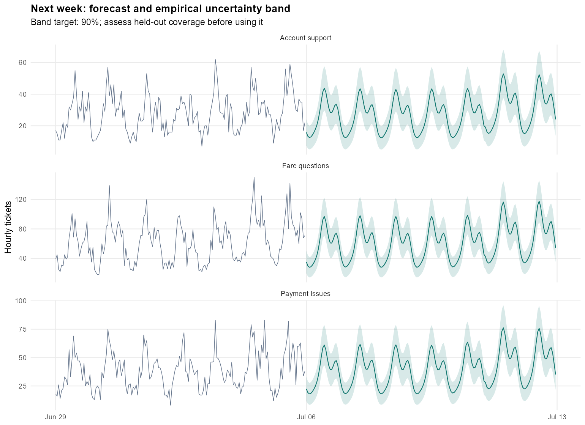
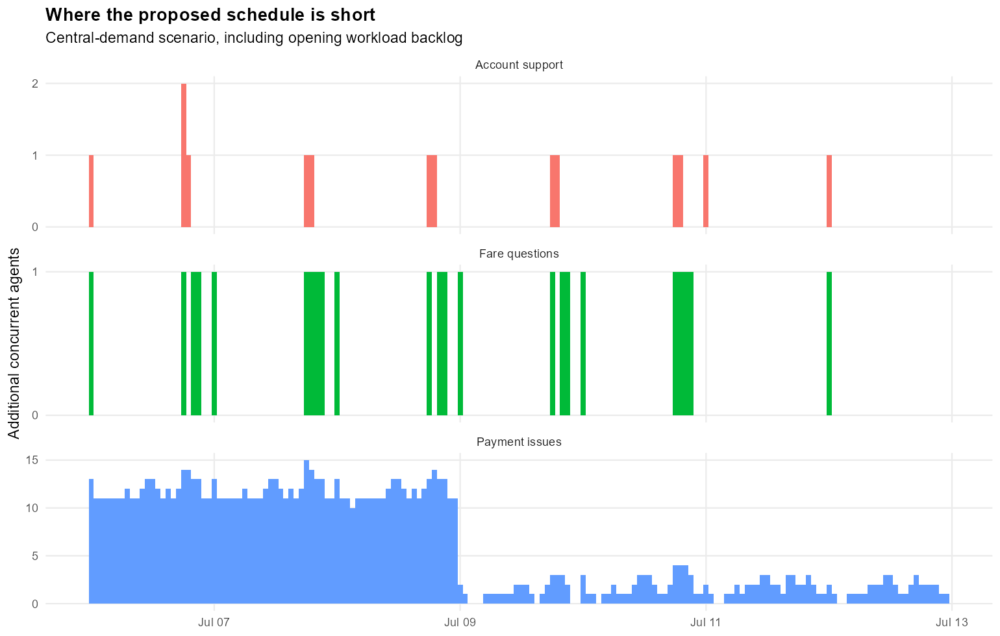
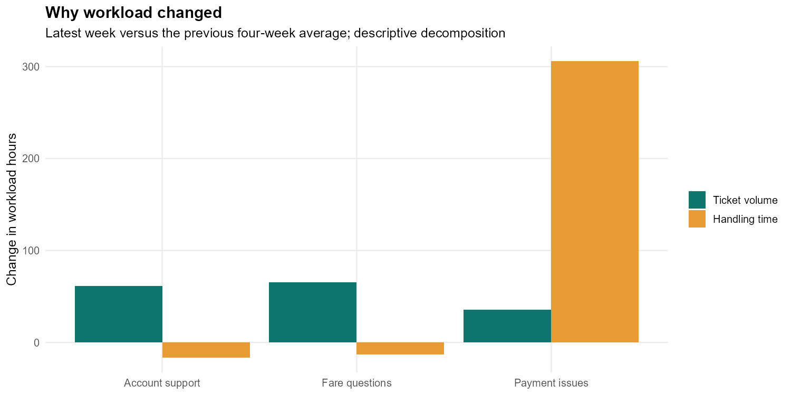

INDEPENDENT PORTFOLIO PROJECT · SYNTHETIC DATA
Review capacity in Payment issues first; the current scenario has uncovered workload.
| Queue | Model | MAE | WAPE_percent | Bias |
|---|---|---|---|---|
| Account support | seasonal_glm | 5.17 | 18.8 | -0.33 |
| Fare questions | seasonal_glm | 9.47 | 15.6 | -0.33 |
| Payment issues | seasonal_glm | 6.69 | 17.5 | 1.57 |



# Weekly support capacity brief **Synthetic portfolio scenario. No Uber data or operational claims.** Forecast window: 06 Jul 2026 00:00 to 12 Jul 2026 23:00 UTC. ## Decision Review capacity in Payment issues first; the current scenario has uncovered workload. - **Account support:** 4,686 forecast tickets; 14 uncovered paid agent-hours across 13 hours. Held-out WAPE 18.8%; empirical band coverage 92.1%. - **Fare questions:** 10,386 forecast tickets; 23 uncovered paid agent-hours across 23 hours. Held-out WAPE 15.6%; empirical band coverage 89.9%. - **Payment issues:** 6,727 forecast tickets; 1,009 uncovered paid agent-hours across 157 hours. Held-out WAPE 17.5%; empirical band coverage 91.9%. ## What explains the recent workload change - **Account support:** workload increased by 44.7 hours. Volume contributed +61.3 hours and handling time -16.6 hours; scheduled capacity changed by +35.2 hours. - **Fare questions:** workload increased by 52.1 hours. Volume contributed +65.2 hours and handling time -13.2 hours; scheduled capacity changed by +40.2 hours. - **Payment issues:** workload increased by 341.5 hours. Volume contributed +35.8 hours and handling time +305.7 hours; scheduled capacity changed by +37.6 hours. The decomposition separates arithmetic contributions from ticket volume and handling time. It does not establish why handling time changed or prove a process caused the increase. Review case complexity, escalations and workflow changes before choosing an intervention. ## How to use the staffing estimate The default scenario assumes 25% shrinkage, 85% productive occupancy and the last 28 days of weighted handling time. Opening workload backlog is allocated over 72 hours. Change these assumptions in Shiny before making a staffing request. Uncovered paid agent-hours are the sum of hourly staffing gaps. They are not the number of people to hire. Shift patterns, skills, breaks and labour rules still need scheduling decisions. This is a fluid workload model. It does not predict an SLA or a customer wait-time distribution. The upper-band scenario is a stress test, not a joint guarantee that all future hours will be covered. ## Forecast checks Model choice uses three earlier rolling validation weeks. Two later weeks calibrate empirical bands. Three final weeks evaluate performance after the choice is frozen. Models refit at each weekly origin using only earlier observations. The production forecast then refits on all available history. A weekly seasonal naive forecast is retained as a benchmark. The alternative is quasi-Poisson seasonal regression with daily Fourier terms, weekday effects and a linear trend. Unplanned incidents and long-term trend changes remain risks. ## Next actions 1. Review the highest-gap queue and the hour-of-day pattern with the operations lead. 2. Compare added peak-hour staffing with a plausible handling-time improvement. Do not call a scenario a realised saving. 3. Confirm proposed schedules and skill coverage; investigate the operational cause of any handling-time increase. 4. Re-run weekly with fresh data and track forecast errors and empirical coverage before relying on the intervals. Data checks: 18 of 18 passed. Historical tickets: 496,203. Historical queue-hours: 13,104.